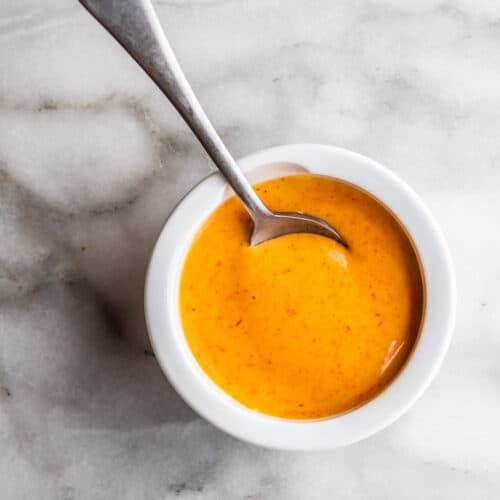

SRIRACHA AIOLI

DESCRIPTION
Spicy Sriracha aioli that's excellent with seafood such as crab cakes or fish tacos.
It's also great as a dipping sauce for homemade french fries or any other broiled or baked potato recipe.
INGREDIENT
- 1 cup mayonnaise
- 2 tablespoons Sriracha hot sauce
- 1 lime,juiced
STEPS
Stir mayonnaise and Sriracha together in a bowl until the color is consistent; add lime juice and stir.